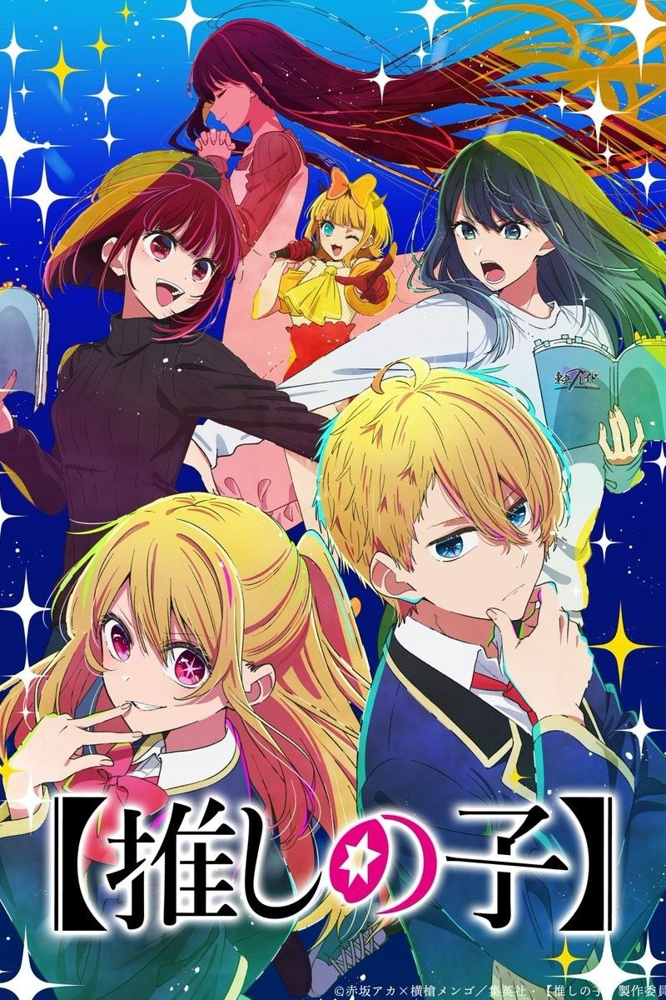
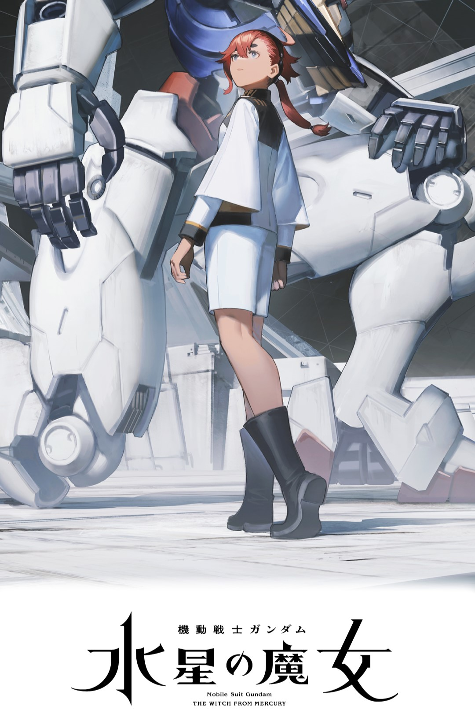
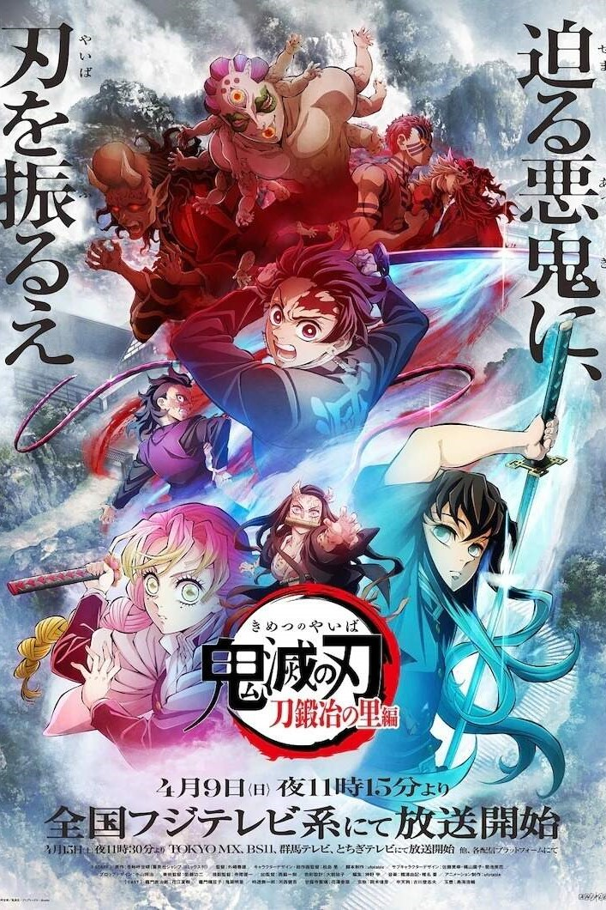

故事講述，全人類因謎之綠光瞬間石化了數千年，所創造的現代文明也無情地倒退回原始生活。3700
年後，突然甦醒的主角石神千空，為拯救地球上所有被石化的人們，運用科學與知識力量，在這個石之世界
重現偉大科學文明。這次第三季舞台是要接續第二季尾聲，主角提到要從陸地轉移至海上，橫跨新大陸去
探索未知世界旅程，不禁令人好奇主角又會如何透過他所理解的科學，使得觀眾再一次大開眼界。
《Dr.STONE 新石紀 NEW WORLD》於日本TV動畫評價上相當不錯，隨著第三季宣布開播，劇情即將進入
大航海時代，官方也有公告故事會迎來新角色七海龍水，此角色曾在人氣投票中獲得第二名好成績，由此
可看出其受歡迎程度。日前《Dr.STONE 新石紀 NEW WORLD》第三季正式宣布在2023年春季開播，新篇章
將揭開關於3000年前全人類石化的謎題，

《勇者死了！因為勇者掉進我這個村民挖的陷阱裡。》簡稱《勇者死了！》，其實從標題和故事背景
就已經擺明自己是對「勇者討伐魔王」這一套路的反叛作：「勇者竟然不是死於與魔王軍的對戰中，而只
是因為出自肚子餓這樣的原因，居然就掉進了區區一個小村民所挖的陷阱而身亡！」本作就以如此荒謬的
原因，拉開了被迫承接勇者職務的小村民「托卡」踏上旅途的序幕。
這部作品雖然初看只會覺得這部作品只是玩梗、單純只是想反套路，但實際上作品設定其實意外的認
真，相當認真的把一些看似致敬勇者魔王套路的設定給圓回來，最難能可貴的是一貫維持了自己三分色色
、三分搞笑、四分認真的氛圍將故事好好說完，成為反勇者套路系作品中值得一看的佳作。
而這位當上勇者的男主角托卡，不管從各方面來說，都與勇者相去甚遠：魔力等級只有一，並且是個
只懂培育蘿蔔的農夫，而本性更是跟清廉正直毫不相關，完全是個擅長挖陷阱的狡詐之人。最重要的是，
托卡超級熱愛女性肉感的大腿，更愛將這樣的大腿套上過膝襪，無論陷入多危險的境地，他這份堪稱純粹
的堅持，更是故事最主要的笑點。

日本動畫《和山田談場Lv999的戀愛》（山田くんとLv999の恋をする）於 2023 年春季開播，本作
改編自ましろ的同名漫畫，由淺香守生執導，動畫公司【MADHOUSE】製作，主要聲優包括水瀨祈、內山
昂輝、花江夏樹、加隈亞衣等，劇情描述大學生「木之下茜」在被前男友因劈腿甩了以後，兩人之間唯一
留下的，是她和前男友一起在線上遊戲『Forest Of Savior』培育出來的角色… 為了宣洩內心的不滿，
茜在遊戲中掃蕩怪物，這時，她遇見了與她同一個公會的「山田」，並不由自主向他抱怨了失戀的事，話
雖如此，山田並無多做反應，只回她一句“我是沒興趣啦”。在那之後，茜為了要讓前男友後悔甩掉自己而
參加了遊戲的實體活動，在那裡，她再次聽到熟悉的那句“我是沒興趣啦”，與山田有了一場命運般的
邂逅…！
就像作品名稱可以看出來，故事有些類似熱門日劇《光之老爸》，將舞台一大部分建構在 MMORPG
網路遊戲之中，但其實在這裡僅較類似於共同興趣社團行動的背景板，關注的視角仍集中在遊戲公會中
成員的互動關係，以及男女主角本身的感情交流。遊戲雖是連接故事人物彼此關係的橋樑，Q 版的人物
也算可愛而讓人放鬆，但對遊戲本身的設定著墨並不是很深刻，因此也不用太擔心聽不懂遊戲術語或是
太複雜的系統設定或者無法登出的暴走劇情亂入，本質上還是正統的女性向戀愛喜劇。

劇情以偶像「星野愛」意外懷上雙胞胎為開端，為了孕育新生命，她選擇暫停演藝活動，前往
鄉下待產。然而，這個消息卻讓她的粉絲、婦產科醫生五郎感到震驚。面對偶像的懷孕事實，五郎決定勇敢
直面，並發誓要保護愛的孩子。然而，劇情卻出乎意料地發展，五郎在愛即將生產前遭到殺害，更驚人的是
，他竟然轉生成了愛的孩子！這個意想不到的轉折為劇情增添了更多懸疑與驚奇，讓觀眾無法抗拒這部作品
的魅力。
我推的孩子以其獨特的敘事視角，深入探討了演藝圈的殘酷現實。透過雙胞胎「阿奎亞＆露比」的視點
，作品細膩描繪了演藝圈中的各種角色，包括幕後工作人員、節目製作人、高層管理人員，以及他們對偶像
的輕率態度。作品不僅揭示了偶像畢業後可能面臨的困境，例如成為被供養的港區女子，還深入剖析了電影
業界的演員等級構成、演出片段被刪減的背後原因等現象。
我推的孩子在音樂方面也表現出色，片頭主題曲由當紅音樂團體YAOSOBI操刀，帶來了名為〈IDOL〉的
動聽歌曲。YAOSOBI以其獨特的音樂風格聞名，這次的〈IDOL〉不僅將故事情節巧妙地融入歌曲中，更巧妙
地將雙胞胎角色「阿奎亞＆露比」的名字寫入歌詞，展現了高超的音樂創作才華。
而片尾曲則由實力派樂團女王蜂演繹，歌曲名為〈メフィスト〉。女王蜂以其獨特的音樂風格和強烈的
表現力為動畫增色，歌曲的旋律營造出神秘的氛圍，讓觀眾感受到劇情的深度和張力，彷彿讓人雞皮疙瘩掉
滿地。 《我推的孩子》動畫在音樂上的精彩表現，無疑為作品增添了更多的魅力，也讓粉絲們對接下來的
劇情充滿了期待。

《機動戰士鋼彈 水星的魔女》的舞台登場於人類所生活的地球與太空殖民地被巨大企業所支配的星元
（Ad Stella）122年。來自邊境水星殖民地的主角「蘇萊塔・墨丘利」與「風靈鋼彈」來到了本身就是
高度資本主義與階級化的星元世界縮影的「阿斯提卡西亞高等專門學園」。在那裡，蘇萊塔與「米奧琳涅・
連布蘭」等人相遇，踏入了殘酷與嶄新的新世界。
第二季將接續奎達工廠事件後的兩個星期，Suletta 身處學院中期待與 Miorine Rembran 的
再會，然而後者卻置身於貝納里特集團中，時刻注意父親 Delling Rembran 的狀態，新的困難很快將向
兩人襲來，兩人也會各自被迫做出決斷。

在《鬼滅之刃：遊郭篇》中，主角竈門炭治郎的刀又受損了！他即將前往下一個目的第：神秘刀匠村。
刀匠村是鬼滅世界的重要據點，為了防止被鬼襲擊藏的非常隱密。在這裡，炭治郎將遇到上弦之肆
半天狗與上弦之伍玉壺，他們將襲擊刀匠村！霞柱和戀柱以及主角一行人將一同打擊上弦鬼，同時鬼殺隊
眾人也會發現「斑紋」的秘密。
炭治郎在刀匠村中遇到霞柱、戀柱，三人之間會擦出怎樣的火花？漫畫中心如止水、毫無情感的霞柱
在遇上炭治郎後，內心竟然起了波動，戀柱泡藥浴溫泉的橋段也超萌！但因為有粉絲抗議畫面「物化女性」
，所以畫面是否會出現在《鬼滅之刃：刀鍛治の里編》中，粉絲還是可以期待一下～～！另外不死川玄彌
也現身刀匠村中，他的的特殊技能也將在第三季曝光。